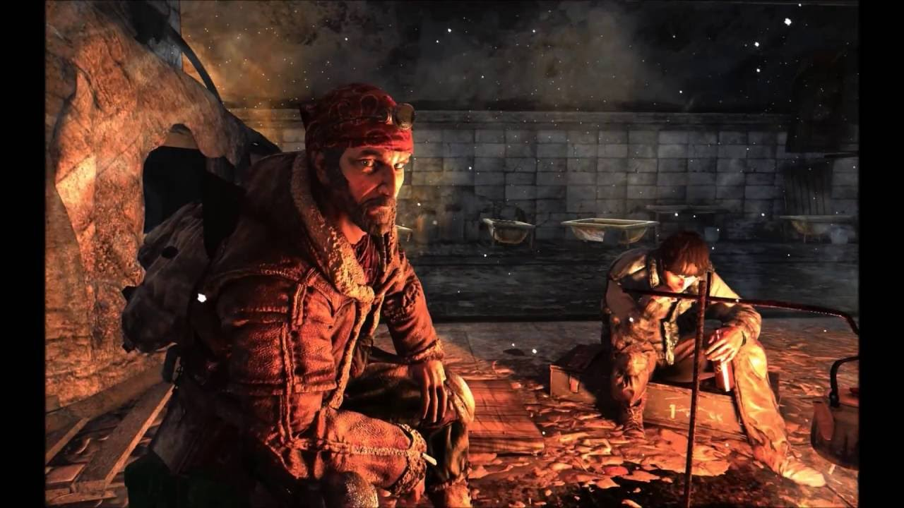

•Второстепенные персонажи• |
|---|
|
Хан — бродячий философ-путешественник. Говорит странными для всех фразами, приводя в примеры события из древней истории. Выглядит как пятидесятилетний мужчина с короткой бородкой, в куртке, и бандане, но на деле Хан является мощным гипнотизёром и едва ли не телепатом, также может смотреть в ближайшее будущее. Хан родился в начале восьмидесятых. До Катастрофы, вероятно, обучался философии. Оказавшись в числе выживших в московском метро, Хан осел на Полянке, где продолжил изучать философию, читая соответствующие книги и почти не выходя в люди. Какое-то время спустя на станцию напали мутанты; часть жителей, включая самого Хана, смогла эвакуироваться, но по вине философа погибли его напарники — Костик с командиром. Скитаясь по метрополитену следующие десять лет, в ноябре 2033 года Хан пришёл на Сухаревскую, где устроил себе прибежище. До конца преданный своему долгу и службе, Хантер бесстрашен и по большей части жесток. Он считает, что любую угрозу нужно уничтожать как можно быстрее. Хорошо знаком с Александром Сухим, которого шутливо называет «Чингачгуком». Хантер пришёл на станцию ВДНХ, чтобы разобраться с чёрными — новым опасным видом мутантов. Сперва Хантер надеется на помощь Ордена, но впоследствии решает истребить угрозу сам. Узнав информацию от Сухого, он отправляется в самое логово мутантов к Ботаническому саду, но перед опасной вылазкой решает перестраховаться на случай своего невозвращения и даёт указание Артёму, молодому жителю ВДНХ, дойти до Полиса и разыскать там Мельника, чтобы предупредить о мутантах. |